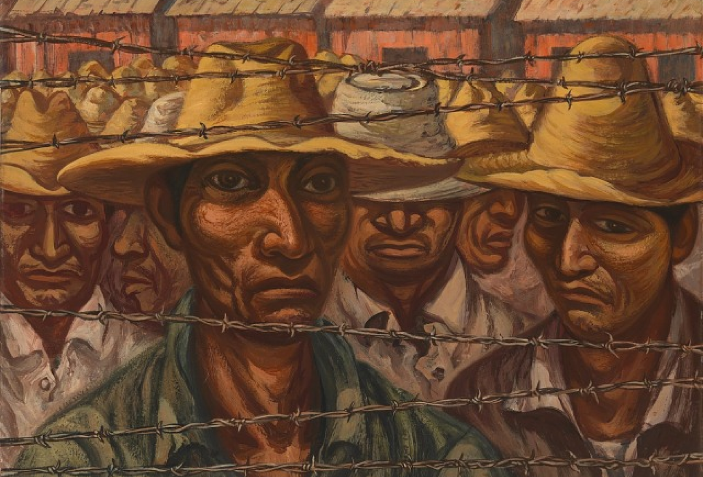

"You and I, our hands are very much the same. Their shape, color and scars may be different, but we carry the same things in our hands..."
"When people want you to stop waving foreign flags with pride but they’ve told you so many times to go back to your country even though you were born here, your hands will be my hands..."
When you are too brown, your accent too thick, when you don’t have your papers, when you are shackled and caged, your hands will be my hands. When you resettle here and bring island within you, not just your salsa and sancocho, but the feeling you will have to survive the storm on your own, your hands will be my hands.
When the thousands of your dead go uncounted, because in some people’s eyes you never counted except for the hours you picked their mushrooms cleaned their homes, cooked their food and raised their children, your hands will be my hands. When you fall, I will reach down to pull you up, dust you off and shake your hand with dignity and respect, then, I will place my hand on your back to push you forward. And when you cast your first vote as a citizen, when you touch your ancestors through window of tradition, when you fight for what you believe in, when you fight for yourself, when you fight for someone weaker than you, what an honor it is for your hands to also be mine.
Excerpts from mano a mano by Anthony Orozco